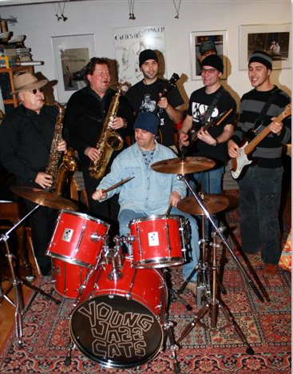
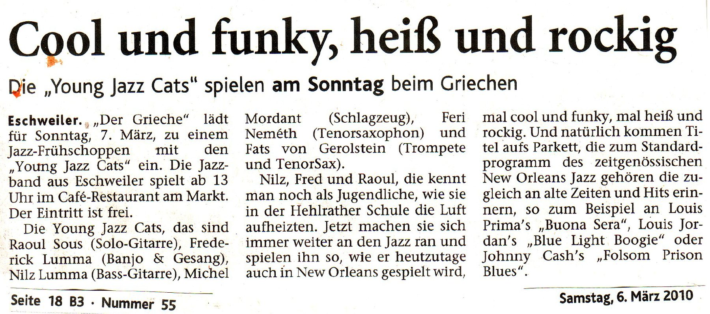
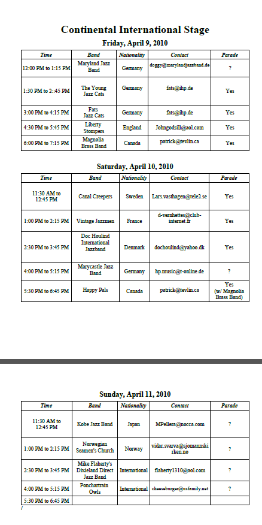

Germany · as drummer
Young Jazz Cats
Michel Mordant plays drums in the Young Jazz Cats, a traditional jazz band from Eschweiler. The Young Jazz Cats (PDF)





Tour
New Orleans
Tour schedule of the Young Jazz Cats in New Orleans.

